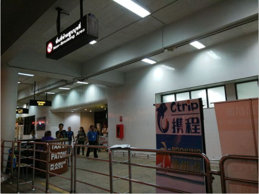

普吉岛9天8晚纯自助游，含大量干货攻略，自助游普吉
必看 普吉岛 行前准备——大量实用干货攻略，5月份更新游记及照片
D1：到达普吉，靠前印象：曲折、倾斜的公路
经过半个多月的比对和筛选，我们选定南航的航班，从武汉天河机场直飞普吉。携程订票，往返价格2756/人，加上从石家庄到武汉的火车票，往返价格为3295/人。
红眼航班，飞行时间4个小时左右，到达普吉的时间是当地时间凌晨三点多。
飞机上空姐会发出入境卡，如许多攻略中提到的，照猫画虎的填好，记得千万不要遗失出境卡，不然还要去补办。
填写说明：1、需用英文填写，其中姓名需用大写字母。
2、护照号码：按照自己护照首页上的填>
3、签证号码：把护照翻到有泰国签证的那一页，visa No。后面的数字就是签证号码
4、签名：用中文写下你的大名
5、注意：千万别写这个地址，以前有人攻略里写的字数少的一个地址，宾馆可填写：704/1 Sukhumvit Main RD, Bangkok（字数少，易填），这完全是误导，我按照那个所谓的字数少的填写，入境时检察官说写真实的酒店名称！！！填写说明：职业可填：office clerk（职员）、teacher（教师）、technician（技术员）、buyer（采购）、cashier（出纳）、doctor（医生）、PROFESSOR（教授）、secretary（秘书）、driver（司机）、salesman（销售）、随便选个填上就好。
1、 普吉机场并不大，人实在太了，从机场往外走完全不用地图，跟着人流就行，指示牌也有中文提示；建议大家不要办落地签，真的能耗死人，我们提前办好了签证，觉得甚为庆幸，但是排队入境时，整整排了两个小时....人多，办事人员效率低，想想那些落地签然后在来排队入境的人，没有3-4个小时恐怕真出不来。
我们排队时发现19-22号通道人很少，问了才知道是快速通道，给小费大概60人民币，快速通关....怪不得办事人员效率低下呢，他们办的快，谁还走快速通道给小费！
2、大家去普吉时尽量不要托运行李，因为普吉机场的行李管理比较混乱，不像国内，航班到达，行李就放在传送带上来回转，你下了飞机又要办手续又要通关检查一两个小时的时间，你的行李都处于无人看管的状态，至于你的行李在外面发生了什么，自行脑补...我们的旅行群里有人说丢行李，靠前天就坏心情，不知后面如何解决的。
3、我们在国内预定好了接机，因为定了浪花朵朵的达差一日游，所以店家赠送了1元接机，真心合适，从机场到巴东要1个多小时。建议大家一定要提前做好行程，定好接送机，普吉的交通不如国内那么便捷。如果没定预定一日游，可以在某宝上定接送机，小车两人，大概90元左右。另外如果是在携程上买的机票，会赠送交通优惠券，我们送机用了这张优惠券，小车两人62元。
4、普吉的公路，真心的恐怖，这里的公路很少有直的，大部分都是倾斜的发卡弯和上下坡，拐弯时感觉对面车是迎面撞来的，这里的司机开贼快，一路上都是飙车的状态，不闭上眼感觉自己就要吐了。去普吉的小伙伴们做好心理准备 ，全程闭眼就好了。
，全程闭眼就好了。
，全程闭眼就好了。
出了机场就能看到接车的牌子，找到自己定的那家名字~~
普吉国际机场
D2,芭东逛街、购物、修整一天
1、此次行程一共订了4家酒店，由俭入奢，在住宿方面我花了好多精力和时间，因为我看重住宿环境而且又有点小洁癖，所以花费大量时间在agoda、booking、携程和蚂蜂窝等网站比较酒店的地理位置、住宿环境、价格，每一个网站的评论都仔细的浏览过，agoda一般价格低，但是售后服务一般，booking上的价格都不含税，每次查询还要自己加上含税价，蚂蜂窝有综合比价功能，能看到哪个网站价格低，总之你如果选定了 一家酒店，就在各大网站上搜寻这个酒店的评价、价格和相关信息，有助于全面了解，当然这样很耗费精力......经过比对，我后还是选的携程订酒店，因为毕竟是出国游，怕出现问题不好解决，看过许多评价说携程的售后服务还不错。
2、靠前家是经济型酒店：
Hemingways Silk Hotel Phuket (普吉岛海明威丝绸酒店) 地 址：184/29, Phuangmuang Sai Kor Rd., Patong, Khatu, Phuket, 83150 ，海明威有好几家，这价丝绸酒店是新开的，设施比较新，重要的地理位置太赞了，出了大门走到大街上右拐就是普吉闻名的马杀鸡店let's relax，左拐就是班赞海鲜市场，马路对面就是江西冷后门，沿着对面的街道一直走十来分钟左右就是芭东海滩，绝对的中心位置。我们到了大厅，看到干净的酒店环境，放了一百个心，但是悲催的来了，普吉的酒店都是11点以后才能办理入住，我们早上8点多到了，没有空房，等到10点左右再问的时候，被告知酒店的客人没有退房，所以酒店无房间了，我们被临时安排到了这条街道后面的APK，心顿时凉了。
APK Resort & Spa这家酒店跟我之前定好的还是有点差距的，房间设施都比较陈旧了，没看到游泳池，而且地理位置也不如丝绸酒店，直接电话携程售后，经过沟通携程退了五十多元的房间差价。
在此提醒大家注意，无论在哪个网站订酒店，如果办理入住时遇到更换酒店，一定要留好的你入住凭证，然后找网站的售后申诉，这样的情况非常常见，我们换酒店时碰到一家跟我们情况一样的，他们是在途牛定的酒店，后来不知道途牛怎么解决的。
3、早上等待入住时，我们把行李存在酒店，步行去了芭东海滩，这是我们为数不过一次来芭东海滩，之前查攻略说芭东海滩的沙滩和海水质量差，因为我并没抱什么美好的希望，但是到达海滩时，眼前的景色让人意外，早晨的海滩人很少，白色的沙子，层层的海浪，在沙滩上觅食的海鸟，沿着海岸线晨跑的金发姑娘，一切都那么美好、悠闲，芭东人们都是夜间活动的，早上海滩上几乎没人，这海滩的景色，瞬间秒杀了三亚.....